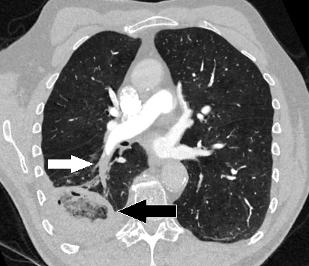

Ficha del catálogo
Infarto pulmonar
- Sistema
- Respiratorio
- Modalidad
- TC
- Región
- Tórax
- Dificultad
- Intermedio
Necrosis isquémica del parénquima que aparece en una minoría de las embolias pulmonares, favorecida por la afectación de ramas periféricas y por la insuficiencia cardiaca. Se manifiesta con dolor pleurítico, hemoptisis y a veces febrícula. Su reconocimiento evita confundirlo con una neumonía y refuerza la sospecha de enfermedad tromboembólica.
Técnica
Angiotomografía pulmonar con contraste intravenoso y sincronización con el pico arterial pulmonar, revisando ventana pulmonar además de la vascular.
Qué observar
- Opacidad periférica en forma de cuña con base pleural
- Vértice dirigido hacia el hilio, en continuidad con un vaso ocluido
- Zonas de menor densidad en el interior de la cuña
- Ausencia de realce de la zona infartada tras el contraste
- Derrame pleural pequeño del mismo lado
- Evolución hacia una cicatriz lineal retráctil con el paso de las semanas
Hallazgos
Consolidación periférica triangular de base pleural sin realce, asociada a un defecto de repleción en la rama arterial que la irriga.
Perlas
El infarto se reconoce por su forma y por su comportamiento en el tiempo, ya que se retrae de manera concéntrica y deja una banda cicatricial. Una consolidación periférica en cuña obliga a revisar con detalle las arterias pulmonares.
Diagnóstico diferencial
- Neumonía periférica
- Realza tras el contraste y presenta broncograma aéreo con fiebre alta.
- Neumonía organizada
- Consolidaciones migratorias múltiples sin defecto arterial.
- Contusión pulmonar
- Antecedente traumático con distribución en el punto de impacto.
Simuladores
- Atelectasia subsegmentaria en banda
- Derrame cisural localizado
- Cicatriz pleuroparenquimatosa antigua
Por modalidad
- RX
- Opacidad periférica de base pleural con borde convexo hacia el hilio
- TC
- Confirma el infarto y demuestra la obstrucción arterial responsable
Protocolo
Angiotomografía con inyección rápida y adquisición sincronizada al tronco pulmonar, con reconstrucciones de cortes finos y ventana pulmonar.
Clasificación
Errores frecuentes
- Informar como neumonía una consolidación en cuña sin revisar las arterias
- No comparar con estudios previos para valorar la retracción típica
- Descartar embolia porque no se ve trombo en las ramas principales

infarto pulmonar embolia consolidacion en cuna dolor pleuritico angiotomografia